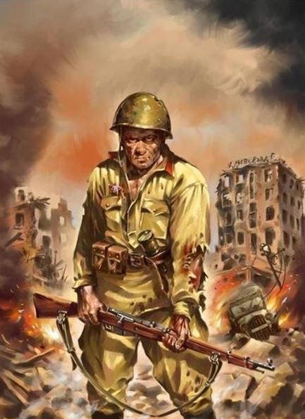
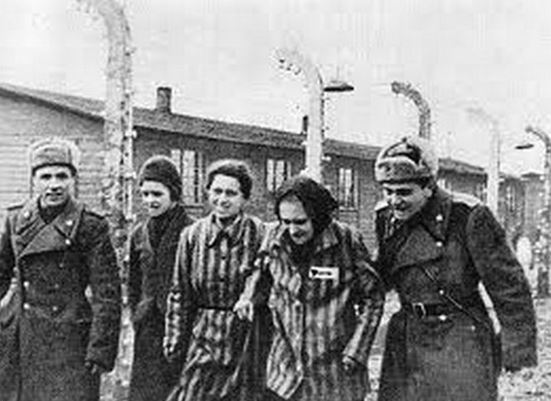
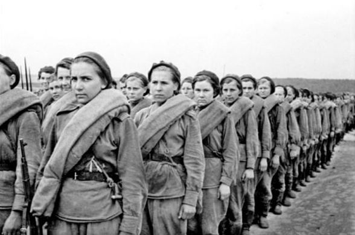
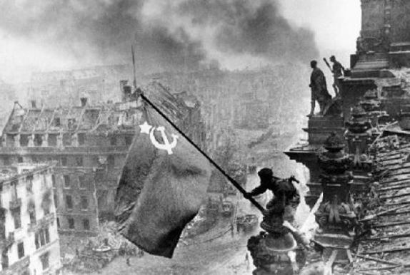
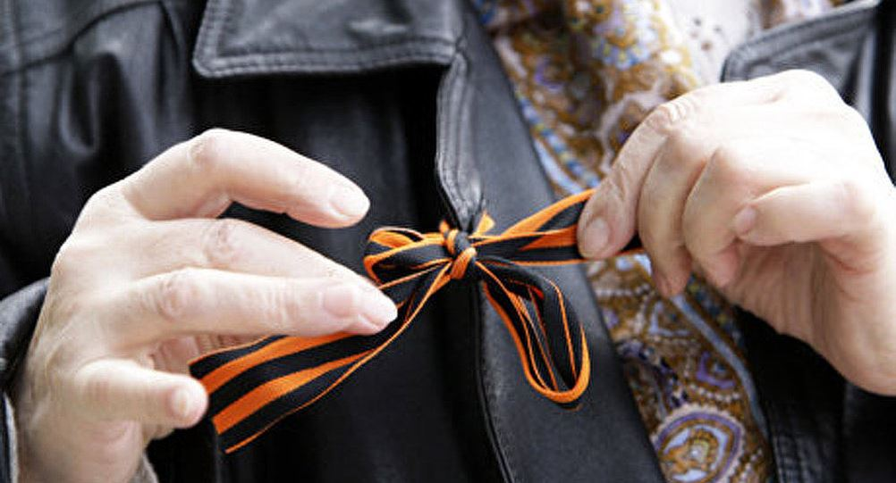

Appel aux députés du Parlement canadien de dénoncer les tentatives de tenir les souvenirs collectifs de la grande victoire sur le nazisme allemand et d’arrêter la falsification de l’histoire
par Le Congrès russe du Canada
Chambre des Communes
Ottawa, Ontario
Canada K1A 0A6
23 mai 2017
Chers parlementaires,
Il y a soixante-douze ans, la plus horrible guerre du XXe siècle se terminait par une victoire spectaculaire des Puissances alliées sur les forces unies de l'Allemagne nazie, du Japon impérial, de leurs satellites et de leurs collaborateurs. L'Union soviétique a payé le prix le plus élevé pour atteindre cette victoire vraiment épique. Au moins vingt-sept millions de personnes, tout autant civiles que militaires, ont péri pendant la guerre. Elles ont été tuées au front, morts de faim durant des sièges, exécutées par les collaborateurs nazis sur les territoires occupés ou exterminés dans les camps de concentration nazis.
Des millions de Soviétiques de toutes nationalités, de tous les coins de l'URSS, ont combattu dans les rangs de l'Armée Rouge ou ont travaillé inlassablement au front intérieur pour remporter la victoire. Russes, Ukrainiens, Géorgiens, Arméniens, Biélorusses, Juifs, Ouzbeks, Tatars, Kazakhs et de nombreuses autres nationalités se sont levés debout pour défendre leurs familles et leurs proches et déjouer les plans génocidaires du régime nazi.
Selon le «Generalplan Ost» nazi, si l'URSS était tombée sous le joug des hitlériens, plus de 60 % de tous les Russes et Ukrainiens, ainsi que 80 à 85 % des Polonais, des Lituaniens et des Tchèques auraient été exterminés ou déportés en Sibérie pour libérer l'espace vital pour la race supérieure allemande.
Le peuple soviétique et l'Armée Rouge, avec leurs alliés canadiens, américains, britanniques et français, ont sacrifié des millions de vies pour empêcher le génocide nazi.
Le tournant de la guerre a été quand l'Armée Rouge brisa le dos de la machine de guerre nazie par une série de batailles décisives en 1942-1944. Après que les Soviétiques aient repoussé les envahisseurs et commencèrent à libérer les prisonniers des camps d'extermination nazis, avec l'envergure et l'étendue de la machine de mort nazie est apparue véritablement l'horreur.
Si l'Allemagne nazie avait prévalu, tous les habitants de l'URSS auraient connu le même sort que les 6 millions de Juifs et les 3 millions de prisonniers de guerre soviétiques qui ont été affamés à mort, fusillés, exterminés dans des chambres à gaz, leur sang prélevé dans les territoires contrôlés par les Nazis.
Nous sommes pour toujours redevables envers ceux qui ont arrêté la propagation du Mal.
Vingt-sept millions de personnes ont péri en Union Soviétique pendant la Seconde Guerre mondiale. Des générations entières ont été effacées. Toutes les familles de l'ex-URSS ont eu quelqu'un qui a combattu sur le front, travaillée sur le front intérieur, ou disparu durant la guerre. La tragédie humaine de cette guerre nous hante encore aujourd'hui.
Pour la plupart des gens de l'ex-URSS, la Journée de la Victoire du 9 mai est beaucoup plus qu'une date de calendrier pour commémorer une guerre déjà terminée depuis bien longtemps. Ce n'est pas un événement politique pour célébrer un quelconque chef historique, un régime politique ou un système, mais une journée très personnelle. Le Jour de la Victoire, nous célébrons la bravoure et l'héroïsme de nos anciens combattants et de ceux qui ont travaillé pour la victoire sur le front intérieur. Nous nous souvenons de notre histoire familiale personnelle et nous l'enseignons à nos enfants. Nous commémorons et honorons le prix incroyablement élevé que nos anciens combattants et survivants de la Seconde Guerre Mondiale ont payé de leur sang, de leur sueur, et de leurs larmes pour arrêter la propagation mondiale du fascisme. Pour la majorité des Canadiens venus dans ce pays en provenance de l'Europe de l'Est et de l'ex-Union soviétique, c'est une pratique courante de commémorer les morts de la Seconde Guerre Mondiale et de célébrer la Journée de la Victoire comme une journée de Fête sacrée.
Cette année, près de huit mille personnes à Toronto ont participé à une série d'événements commémoratifs communautaires qui ont rassemblé des personnes de tous les groupes ethniques de l'ex-URSS. Soucieux d'exprimer leur gratitude pour les sacrifices de leurs ancêtres et de célébrer quelques anciens combattants survivants de la Seconde Guerre Mondiale, des milliers de personnes ont marché dans les rues de Toronto, d'Ottawa, de Vancouver, de Winnipeg et de Montréal avec les portraits de leurs proches qui ont payé très cher pour garantir notre propre existence.
Ces événements sont ouverts à tous ceux qui souhaitent honorer les sacrifices de personnes de toutes les nations alliées qui ont lutté contre le mal de l'ultra-nationalisme, contre le nazisme et la haine raciale. Nous honorons la mémoire des victimes de l'Holocauste, des victimes du génocide des Tsiganes en Europe, de tous ceux dévorés par la machine de mort nazie et de tous les survivants de la campagne continentale de nettoyage ethnique perpétrée par les nazis et leurs collaborateurs locaux.
Malheureusement, tous ne partagent pas nos sentiments de reconnaissance et d'admiration pour les actes héroïques de nos anciens combattants. Au cours des dernières années, en raison des événements politiques qui se sont déroulés à l'intérieur et autour de l'Ukraine, nos célébrations de la Journée de la Victoire, nos bannières, nos rubans de Saint-Georges et d'autres symboles de la grande Victoire sur l'ennemi le plus meurtrier auquel l'humanité civilisée ait été confrontée au cours de son histoire, aujourd'hui sont devenus une épine dans l'œil de divers groupes nationalistes de droite. Même nos souvenirs personnels des sacrifices que chacune de nos familles ont dû faire, pendant que les soldats de l'Armée Rouge luttaient contre le nazisme, sont exposés à la moquerie et à l'opprobre.
Chaque année, tous les paliers de gouvernements sont bombardés de lettres diffamatoires et de pétitions qui insultent nos anciens combattants, nos bénévoles et nos organisations. L'objectif final de ces campagnes est de dépouiller les citoyens canadiens de descendance soviétique de nos droits constitutionnels à la liberté de réunion et à la liberté d'expression, à faire taire notre communauté et à salir les souvenirs de nos anciens combattants et héros. Les individus et les groupes derrière ces attaques diffamatoires essayent constamment de mettre sur un même plan les vétérans de l'Armée Rouge avec les nazis, et représentent nos bénévoles, qui travaillent sans relâche à organiser les événements commémoratifs, comme des «agents de Poutine», une «cinquième colonne» imaginaire des ennemis de la démocratie canadienne et de ses valeurs. De nombreuses demandes pour la suppression des événements commémoratifs de notre victoire commune de la Seconde Guerre Mondiale proviennent des militants et des organisations qui continuent à glorifier les collaborateurs nazis confirmés et les auteurs des massacres de Volyn et de Babi Yar en Ukraine - l'Organisation des nationalistes ukrainiens, la division SS de Galicie (Ukraine) et l'armée insurgée ukrainienne, ainsi que les leaders ignominieux de ces formations pro-nazies, les fascistes ukrainiens Stepan Bandera et Roman Choukhevych.
Qui aurait bien pu penser un jour que déposer des fleurs sur le mémorial de l'Holocauste ou exprimer notre gratitude aux soldats de toutes les nations alliées est une menace pour la sécurité nationale ? Et pourtant, les fans d'aujourd'hui des collaborateurs fascistes ukrainiens du régime nazi considèrent comme une offense les drapeaux rouges, les banderoles de la Victoire et les rubans de Saint-Georges qui accompagnent nos célébrations de la Journée de la Victoire.
Seule l'ignorance des critiques peut expliquer leur vision de ces symboles comme des manifestations inutiles de la nostalgie soviétique.
Des drapeaux rouges ont été brandis pendant les révolutions européennes de 1848, la Commune de Paris de 1871, les événements du 1er mai 1886 aux États-Unis d'Amérique, les grèves de 1901-1914 dans les Maritimes et la grève générale de Winnipeg en 1919. Ils sont les symboles de nombreux groupes socialistes et de gauche dans le monde entier. La bannière rouge de la Victoire a été hissée par les soldats soviétiques sur le Reichstag de l'Allemagne le 2 mai 1945. Elle symbolise la victoire sur le nazisme.
Le ruban de Saint-Georges était à l'origine associé à l'Ordre de Saint-Georges, établi en 1769 comme la plus haute décoration militaire de l'Empire russe. Dans la Russie tsariste, c'était un symbole de bravoure, porté durant la Guerre patriotique de 1812 contre les forces agressives de Napoléon Bonaparte. Il a été porté par les officiers de l'Armée blanche qui ont combattu le communisme soviétique en 1918-1922.
L'Armée Rouge a ressuscité le ruban de Saint-Georges comme distinction spéciale pour ses troupes d'assaut en 1942, après la première contre-offensive réussie contre la Wehrmacht.
Heureusement, nous vivons dans un pays qui a des principes démocratiques et protège les droits humains de ses citoyens, en particulier la liberté de réunion, d'association et de parole. Ces libertés de base sont inscrites dans la Charte canadienne des droits et libertés. Et alors que nous, en tant que citoyens canadiens, sommes convaincus que nos droits sont protégés par l'État, nous trouvons troublant que des pressions sur notre capacité à les exercer continuent.
Nous appelons les parlementaires canadiens, indépendamment de leur appartenance politique, à dénoncer les tentatives des groupes de droite de faire taire nos voix et d'entacher nos souvenirs collectifs de la Grande Victoire sur le nazisme allemand.
Partager cette page